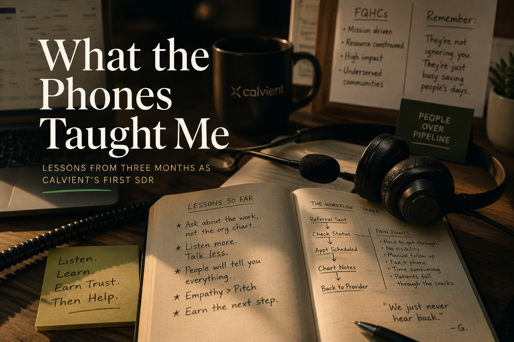

Things I needed to get out of my head and put somewhere I could find them again.

I started at Calvient in March with no playbook, no predecessor, and no experience in healthcare. Twelve employees. A CRM full of potential. A phone. And a market I had never worked in.
Three months later I had talked to referral coordinators managing a thousand open cases, nursing directors thirty days into the job carrying doubts nobody asked them about, and operations leaders holding two roles without complaint. Most of them talked because I asked about the work instead of the org chart.
This is what I learned. About outbound sales, about healthcare, and about what happens when you stop pitching and start listening.
Read the full piece (PDF) →